Junhyeong Lee
Postdoctoral Fellow · PRISM-AI Center (InnoCORE) & AiM4 Lab · KAIST
I am a Postdoctoral Fellow at the PRISM-AI Center and AiM4 Lab, Korea Advanced Institute of Science and Technology (KAIST), advised by Prof. Seunghwa Ryu. I received my Ph.D. in Mechanical Engineering from KAIST in 2026.
My research focuses on AI-driven inverse design, AI for end-to-end manufacturing, data-driven optimization, and Large Language Models applied to materials and manufacturing systems.
News
- Feb. 2026Started as Postdoctoral Fellow at PRISM-AI Center (InnoCORE) & AiM4 Lab, KAIST.
- 2025Student of the Year at the Spring Conference of the Korean Institute of Metals and Materials (KIM).
- 2025Outstanding Paper Award, CAE and Applied Mechanics Division, Korean Society of Mechanical Engineering (KSME).
- 2025Paper accepted at Journal of Manufacturing Systems (IF: 14.2, Top 0.7% JCR): IM-Chat LLM framework.
- 2025Paper accepted at Nano Energy (IF: 17.1): Bayesian optimization for triboelectric nanogenerators.
- 2024Paper published in Small (IF: 13.0, front cover): foodborne pathogen detection via deep learning.
Publications
+ Equal contribution · * Corresponding author
2026
Reducing False Negatives in Gastroesophageal Reflux Disease Diagnosis Through Multi-Feature Anomaly Detection of pH-Impedance Signals
npj Digital Medicine, In press
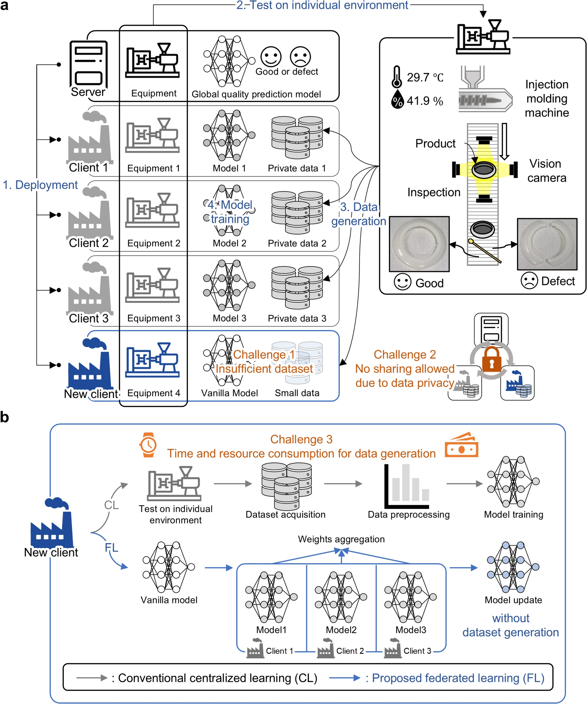
Federated Learning Framework for Data-Sovereign Quality Prediction in Injection Molding
International Journal of Precision Engineering and Manufacturing, In press
2025
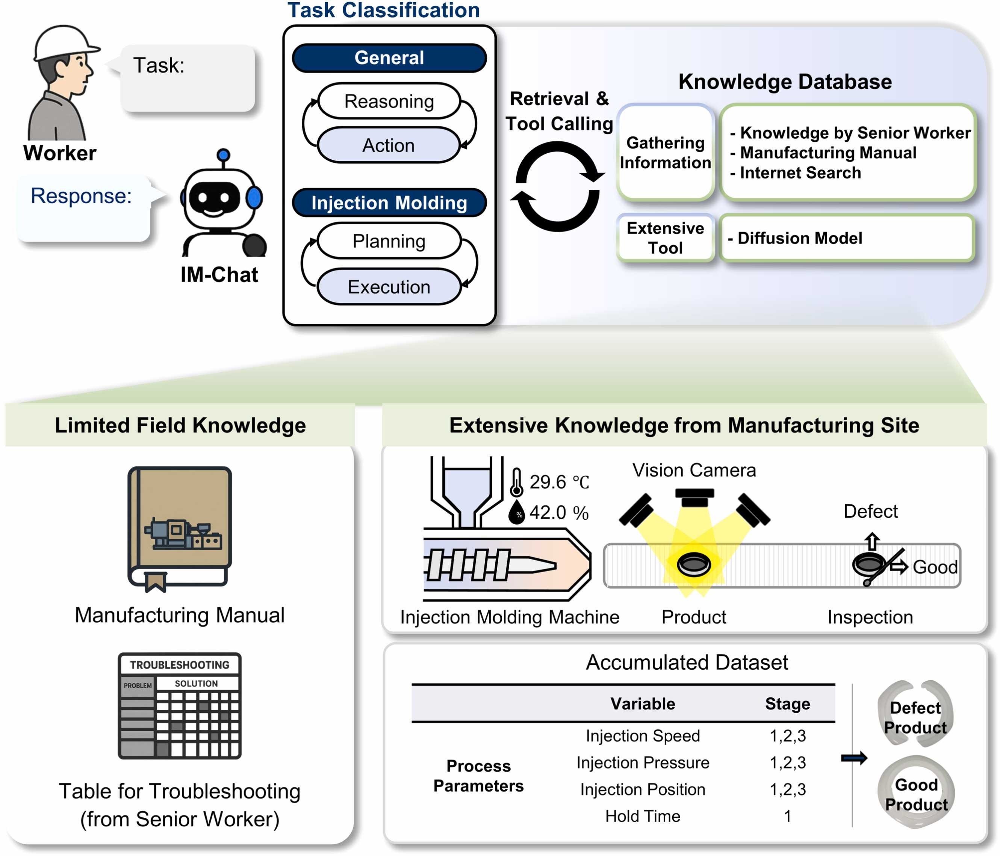
IM-Chat: A Multi-agent LLM-based Framework for Knowledge Transfer in Injection Molding Industry
Journal of Manufacturing Systems, In press · IF: 14.2, JCR Top 0.7%
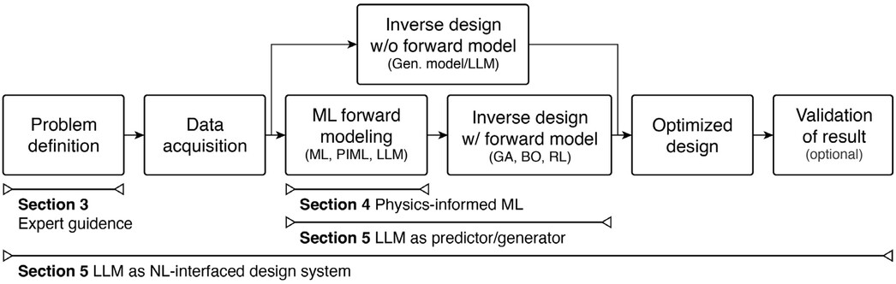
Toward Knowledge-Guided AI for Inverse Design in Manufacturing: A Perspective on Domain, Physics, and Human-AI Synergy
Advanced Intelligent Discovery, e202500107
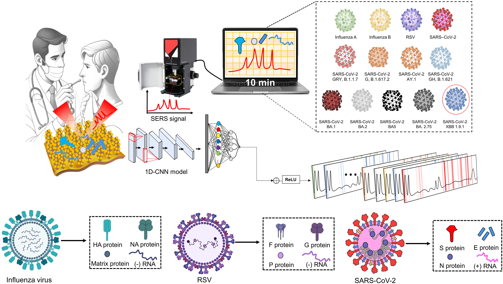
Interpretability-Driven Deep Learning for SERS-based Classification of Respiratory Viruses
Biosensors and Bioelectronics, 117891 · IF: 10.5, JCR Top 3.2%
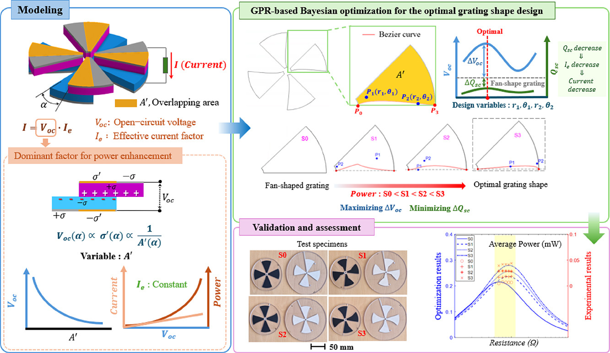
Enhanced Energy Harvesting in Rotary Triboelectric Nanogenerators via Gaussian Process Regression-Based Bayesian Optimization
Nano Energy, 135, 110653 · IF: 17.1, JCR Top 7.8%
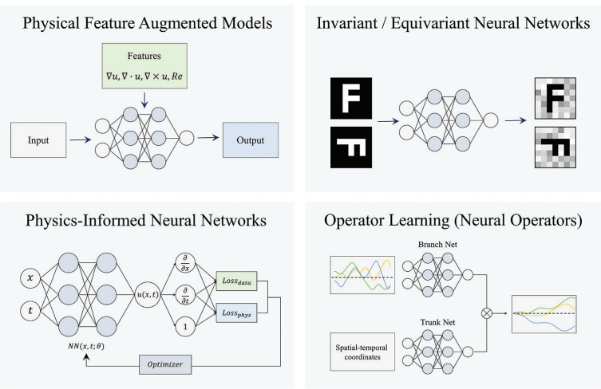
Physics-Informed AI for Material Characterization: A Perspective on Data-Efficient Discovery through Physics-Informed Neural Networks
International Journal of AI for Materials and Design, 2(4), 2025
2024
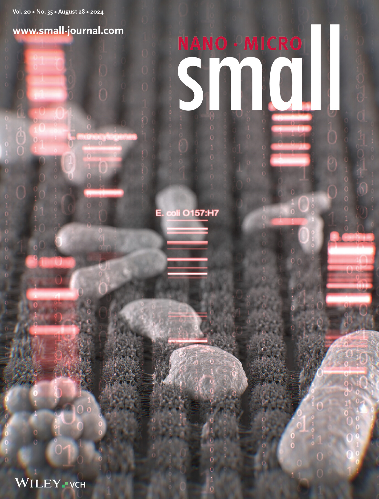
Multiplex Detection of Foodborne Pathogens using 3D Nanostructure Swab and Deep Learning-based Classification Raman Spectra
Small, 20(35), 2308317 · IF: 13.0, JCR Top 10.6% · Front Cover
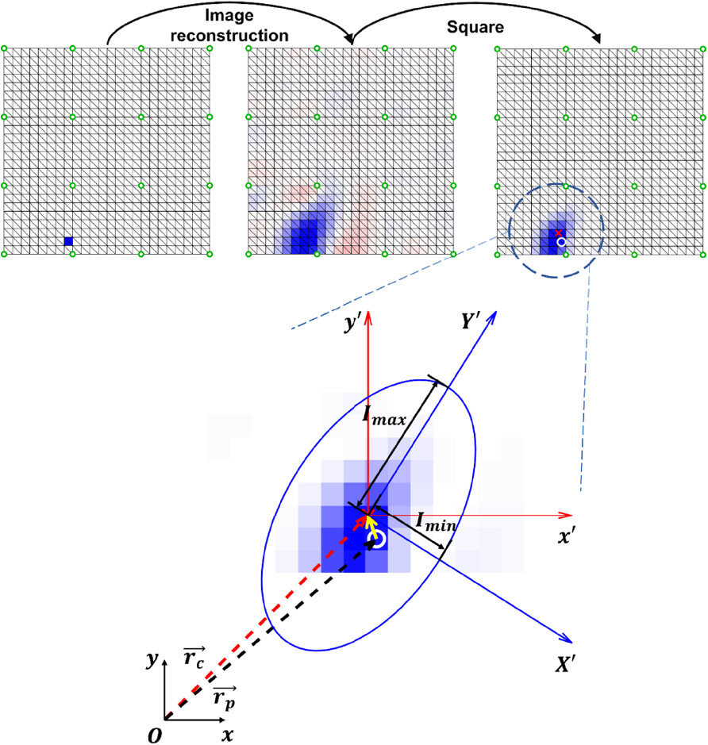
Electrode Placement Optimization for Electrical Impedance Tomography using Active Learning
Advanced Engineering Materials, 26(11), 2301865
2020 – 2023
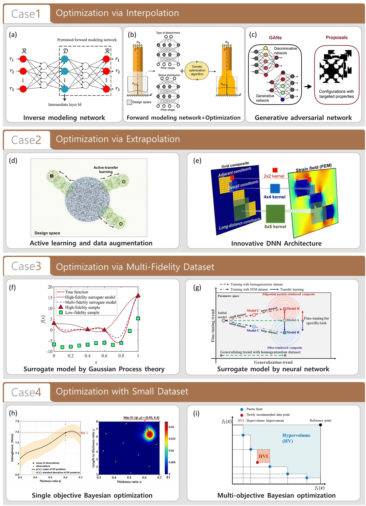
Machine Learning-based Inverse Design Methods Considering Data Characteristics and Design Space Size in Materials Design and Manufacturing: A Review
Materials Horizons, 10, 5436–5456, 2023 · IF: 13.3, JCR Top 9.8%
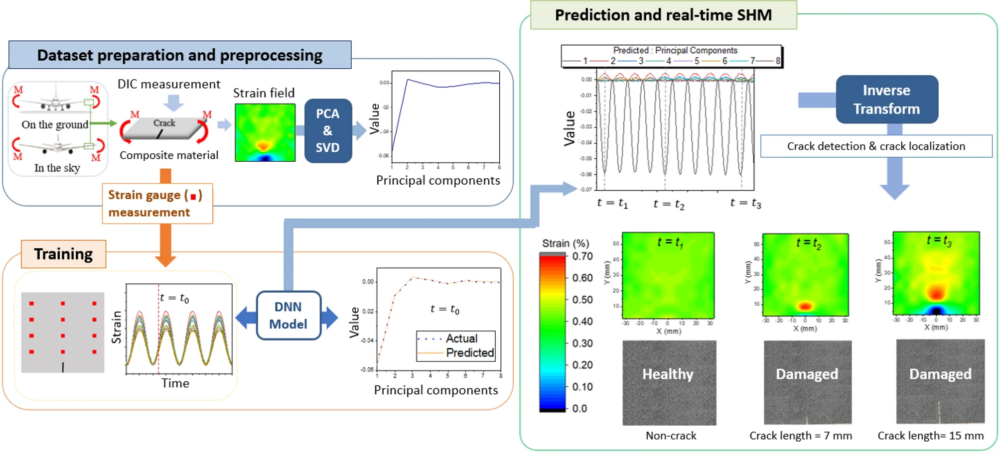
Deep Neural Network-based Structural Health Monitoring Technique for Real-time Crack Detection and Localization using Strain Gauge Sensors
Scientific Reports, 12(1), 20204, 2022
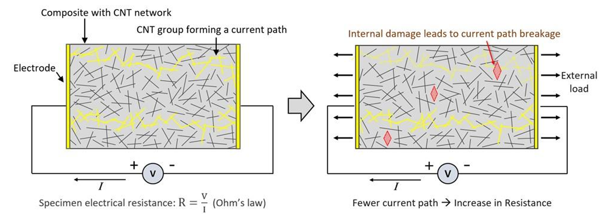
Damage Detection of Composite Materials via IR Thermography and Electrical Resistance Measurement: A Review
Structural Engineering and Mechanics, 80(5), 563–583, 2021
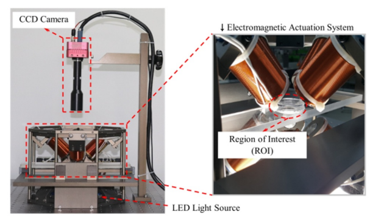
Analysis and Evaluation of Path Planning Algorithms for Autonomous Driving of Electromagnetically Actuated Microrobot
International Journal of Control, Automation and Systems, 18, 2943–2954, 2020
Under Review / In Preparation
Dual-Constrained Diffusion Model for Nonlinear Microstructure Inverse Design with Direct Evaluation
Submitted
A Comprehensive Review of Thermoelectric Power Generators: Advances in Material Discovery, Structural Optimization for Performance Enhancement, and Service Life Stability
Submitted
Real-Time Structural Health Monitoring with Bayesian Neural Networks: Distinguishing Aleatoric and Epistemic Uncertainty for Digital Twin Frameworks
Mechanical Systems and Signal Processing · Under review
Enhancing LLM-based Conditional Material Generation for Double Perovskite through Multi-Agent Feedback and Domain Knowledge
In preparation
Patents
Knowledge Transfer Device and Method using an Agent Based on a Large Language Model
Filed: KR 10-2025-0145843, 2025
Method and Apparatus for Optimization of Cathode Material Design Multi-objective Bayesian Optimization
Filed: KR 10-2023-0172701, 2023
Projects
Ministry of Science and ICT (MSIT), Korea · 2025–Present
InnoCORE Project
National flagship program (~$25M USD over 4.5 years) to advance AI-driven manufacturing and foster postdoctoral researchers across Korea's four Institutes of Science and Technology (KAIST, GIST, DGIST, UNIST). Led proposal development and conceptual design of an LLM-based autonomous manufacturing framework integrating materials, structure, and processing.
Ministry of Science and ICT (MSIT), Korea · 2025–Present
National Agenda Basic Research Program
Three-year national research project (~$150K USD/year) focused on developing domain-specialized LLMs to enhance productivity in advanced manufacturing. Contributing to core LLM frameworks and application technologies enabling intelligent, domain-aware automation in smart manufacturing workflows.
Curriculum Vitae
Education & Experience
Present
Postdoctoral Fellow
PRISM-AI Center (InnoCORE) & AiM4 Lab, KAIST, S. Korea
Advisor: Prof. Seunghwa Ryu
Feb. 2026
Ph.D. in Mechanical Engineering
Korea Advanced Institute of Science and Technology (KAIST), S. Korea
Advisor: Prof. Seunghwa Ryu
Research Assistant
Department of Mechanical Engineering, KAIST, S. Korea
Feb. 2022
M.S. in Mechanical Engineering
Korea Advanced Institute of Science and Technology (KAIST), S. Korea
Advisor: Prof. Seunghwa Ryu
Feb. 2019
B.Eng. in Convergence Engineering — Summa Cum Laude
Daegu Gyeongbuk Institute of Science and Technology (DGIST), S. Korea
Honors & Awards
Student of the Year
Spring Conference, Korean Institute of Metals and Materials (KIM)
Outstanding Paper Award
CAE and Applied Mechanics Division, Korean Society of Mechanical Engineering (KSME)
DGIST Presidential Fellowship
DGIST — Dean's List · $10K research program · $20K overseas lab support
Dean's List
DGIST — Top 5 ranking per semester · $2.5K financial support
Teaching Experience
AiM4 Lab Student Representative
KAIST — Coordinated research activities, organized seminars, managed lab resources
Teaching Assistant
KAIST — ME567 Statistical Thermodynamics · ME231 Solid Mechanics · ME639 Elasticity & Micromechanics · ME211 Thermodynamics · ME491B Statistical Data Analysis · ME221 Fluid Mechanics
Teaching Assistant
DGIST — SE201b: Linear Algebra
Skills
Simulation / Coding
COMSOL Multiphysics, ABAQUS, Fe-safe, HyperMesh, ADINA, EIDORS, MATLAB, Python
Data-Driven Design
Generative modeling, surrogate modeling & optimization, Bayesian optimization
Large Language Models
Multi-agent orchestration, RAG (retrieval-augmented generation), tool-calling
Languages
Korean (native), English (advanced)